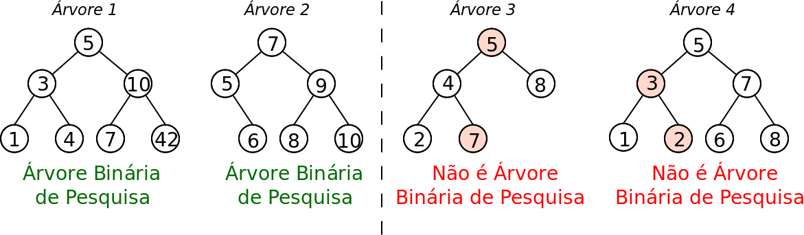

Use como base as classes BSTree<T> e BSTNode<T>.
Acrescente à classe dada um método public boolean valid() que verifique se a árvore binária é realmente uma árvore de pesquisa, ou seja:
A figura seguinte ilustra alguns exemplos de árvores binárias, indicando se são ou não árvores binárias de pesquisa:

Pode assumir que ja foi lida uma árvore binária não vazia contendo somento elementos diferentes (não existem valores iguais) e agora só tem de verificar se é ou não de pesquisa.
Deverá submeter apenas a classe BSTree<T>, acrescentando o método valid como pedido (e sem apagar ou modificar nenhum dos outros métodos dados como base). Pode assumir que terá acesso no Mooshak à classe BSTNode<T> (não a pode mudar) e se precisar pode criar outros métodos auxiliares. O Mooshak irá criar várias instâncias da sua classe e irá fazer uma série de testes ao método por si implementado.
Os exemplos correspondem às árvores da figura do enunciado.
| Árvore t (em preorder com N a ser uma subárvore nula) |
t.valid() |
|---|---|
| 5 3 1 N N 4 N N 10 7 N N 42 N N | true |
| 7 5 N 6 N N 9 8 N N 10 N N | true |
| 5 4 2 N N 7 N N 8 N N | false |
| 5 3 1 N N 2 N N 7 6 N N 8 N N | false |
Conteúdo de Fernando Silva (DCC/FCUP), migrado de dcc.fc.up.pt/~fds/aulas/EDados/2526/praticas/problems/prob210.html.